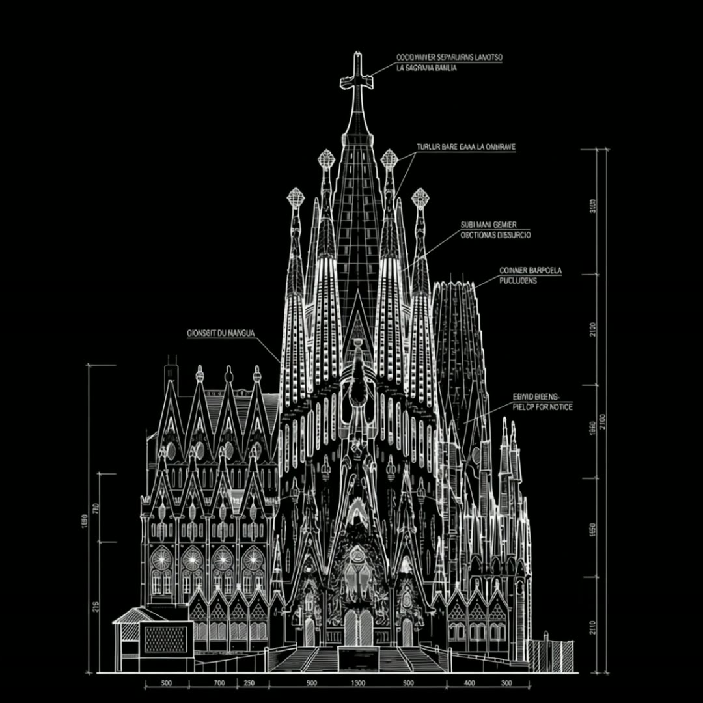
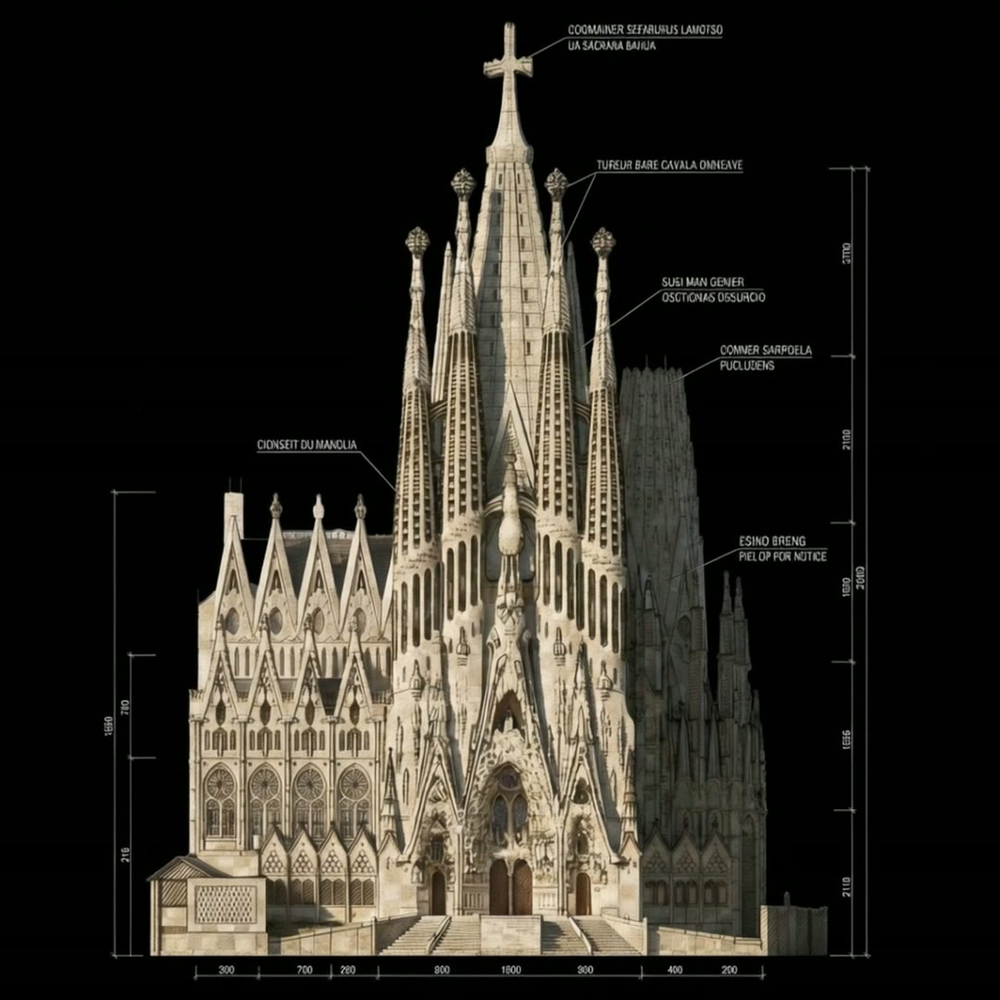

Tester Tech / Edition 01
A connected family of instruments — smartwatches, smart glasses, ambient assistants, the lights and locks you forget about. One mesh, one privacy ledger, one design language. Built in Berlin for the way you actually live.
~ Hello, and welcome in.
Tester Tech is the rest of what we make — the things that live around the watch. Take your time. There’s no add-to-cart hidden in here, and nobody’s tracking you.
Each device has a quiet file. Read what you want, skip what you don’t. Nothing demands a click.
Every Tester device speaks the same protocol and writes to the same privacy journal — one you can read.
Eleven of us. We answer our own email. If something here speaks to you, write back.
Featured Devices / 01
Six instruments designed to feel like one. Built from the same alloy, tuned by the same engineers, speaking the same protocol. Tap any card to read its file.
Wearable Technology / 02
Optics on the wrist. Optics on the face. A ring you forget about until it tells you something worth listening to. Three pieces, one continuous sensor stack.
Optics / Lens 01
Photochromic titanium frames. A 54° field, monochrome by choice, lit only when something genuinely needs your attention. Translation, captions, directions — nothing else.
Wearable / Loop Ring
A titanium ring with the same sensor block as the Pro — pulse, oxygen, skin temperature, sleep stages. Seven days of charge. The instrument you actually forget you’re wearing.
A Day with Tester / Lived
Three small scenes from a Tuesday. Nothing dramatic happens. That’s the design goal — technology that fades behind the day instead of interrupting it.
06:47
The lamp warms up before the alarm does. The watch taps your wrist twice — that’s its whole personality before coffee. No screen, no notification, no name.
10:24 · Focus
The display hub mutes the room. The glasses translate a paragraph from a French paper without you asking. Echo Field holds calls until you stand up. Nothing pings.
21:08 · Wind-down
Lights drop to 22%. The speaker plays the album you ended on last Tuesday. The watch loosens the haptics. The mesh notices you stopped moving — and gives you the room.
Listening · Local model
“Dim the studio lights to 22% and start the morning playlist.”
AI Assistants / 03
Echo Field is a far-field assistant designed to do less, better. Speech recognition runs on-device. Nothing leaves the room unless you ask it to. When it speaks, it sounds like a person who actually lives there.
A 1.2B-parameter model runs locally. No cloud round-trip, no telemetry, no transcript history outside your home.
Knows which devices are in which room. Speaks to the closest one. Hands off cleanly when you move.
Every request — voice, sensor, automation — signed and journaled. Open the ledger from the wrist.
Smart Living / 04
The room is the interface. Lights, locks, displays, sensors — tuned to notice you, never demand of you. Scroll the rail.
Tunable warm-to-cool, biometric circadian sync. Mesh-aware dimming.
10″ ambient panel. The dashboard the rest of the mesh writes to.
Local-first voice assistant. Far-field, six-mic array.
Active room-noise modeling. Picks up the watch’s mic when it’s cleaner.
Wrist-only entry. Mesh handover from watch to door, sub-100ms.
Tiny radio relay. Drop one per room. The mesh fills itself in.
Sights / Field Study 01
A scroll-through study of how a landmark assembles from line to stone. We start with the architectural blueprint of La Sagrada Família, let it bloom through 121 frames of construction light, and land on the finished basilica — one image per scroll tick.


Blueprint → StonePress / 04b
We don’t do launch tours. The Pro and the Field went out as samples, and a few good writers chose to write back. Here’s a selection.
“The Tester family is the rarest thing in consumer tech right now — a coherent voice. Every device looks like it came out of the same room, because it did.”
“If Nothing made watches and Leica made smart homes, the result would look a lot like this. The Lens 01 is the first AR product I’ve worn outside without feeling like a marketing asset.”
“Echo Field is the first ambient assistant that doesn’t feel like a microphone. It sounds like a person who lives there — quiet, deliberate, and refreshingly indifferent to my data.”
Future Tech / 05
Four products in the pipeline. We don’t promise dates — we promise that when they ship, they will be worth the wait.
Q3 / 2026
Pico-laser HUD that throws a 6-inch interface onto the back of your hand. In bench.
PrototypingQ4 / 2026
Continuous glucose + hydration. A coin-sized wearable that lives under cotton.
Clinical trial2027
A radio that lets Tester devices talk to non-Tester devices — without telemetry.
Designing2027+
An SDK so makers can build their own instrument on the same protocol.
ResearchCommon Questions / 06
The questions we hear most often. Don’t see yours? Email us — a real person writes back, usually within a day.
Still wondering? Write to hello@tester.berlin — a human reads every email.
Or jump to reserveReserve / The first hundred
Edition 01 ships from Berlin. Reservations are open for the family — bundle the watch, the lens, and the field and we’ll number them together. We’ll write when there’s something worth saying.